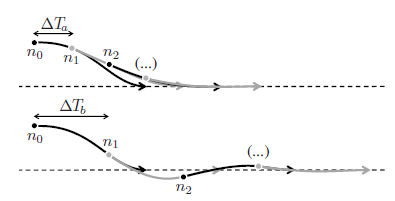

Tervezés¶
Megkülönböztethetünk globális tervezés és lokális tervezést.

A tervezés mint fogalom arra a kérdésre ad választ, hogy hogyan jutunk el A-ból B pontba a megfelelő kritériumok mellett. A tervezésnek két alrésze van a pálya- vagy útvonaltervezés, amely megmondja hogy az adott szakaszon merre kell menni illetve a trajektóriatervezés, amely azt mondja meg hogy az adott szakaszon milyen sebességel kell haladnia az adott járműnek.
A tervezési feladat jellege szerint megkülönböztettünk globális és lokális tervezést. A két tervezési módszer különbségeit az alábbi táblázat foglalja össze:
| Globális tervezés | Lokális tervezés |
|---|---|
| Térkép alapú | Szenzor alapú |
| Ismert terep/munkaterület | Ismeretlen terület |
| Az út tervezés előbb történik mint a mozgás | Az út tervezés és a mozgás egyszerre történik |
| Nincs szigorú követelmény a számítási időre | Követelmény hogy valós időben működjön |
A tervezés végeredménye mind lokális és globális esetben egy diszkrét pontokra osztott szakasz, amelynek minden pontja tartalmaz pozíció, orientáció és sebesség információkat, amit röviden trajektóriának hívunk:
 .
.
flowchart LR
subgraph Plan [Tervezés]
G[Globális<br/>tervezés]:::red -->|útvonal| L[Lokális<br/>tervezés]:::red
end
subgraph Perception [Észlelés]
T[Térképezés<br/>/észlelés/]:::light
H[Lokalizáció<br/>/észlelés/]:::light
P[Predikció<br/>/észlelés/]:::light
end
T --->|térkép| L
H --->|pose| L
P --->|prediktált objektumok| L
subgraph Control [Szabályozás]
L --> |trajektória| S[Szabályozás]:::light
end
classDef light fill:#34aec5,stroke:#152742,stroke-width:2px,color:#152742
classDef dark fill:#152742,stroke:#34aec5,stroke-width:2px,color:#34aec5
classDef white fill:#ffffff,stroke:#152742,stroke-width:2px,color:#152742
classDef red fill:#ef4638,stroke:#152742,stroke-width:2px,color:#fff
Globális tervezés¶
Bevezetés (Globális tervezés)¶
Az alábbi német nyelvű, de angol PPT-t és feliratot tartalmazó videó a TU München tananyagának része, a témában jó összefoglaló:
A Videóhoz tartozó PDF fájl elérhető itt
Ismertebb globális tervező algoritmusok:
- RRT (Rapidly exploring random tree): Az RRT egy mintavételezés alapú módszer bejárandó globális tér felderítésére és útvonalak tervezésére. Megjegyzés: bizonyos esetekben lokális tervezőként is használják. Az algoritmus random (véletlenszerű) módon választ ki pontokat és növekvő irányban kiterjeszti a fát azáltal, hogy a legközelebbi már meglévő pontokhoz kapcsolja az új pontokat. További információ: en.wikipedia.org/wiki/Rapidly_exploring_random_tree.
- Informed-RRT: Az Informed-RRT az alap RRT kiterjesztése, amely heurisztikát használ a cél felé történő hatékonyabb felderítésre. Az algoritmus úgy tervezi az útvonalakat, hogy először a közelebbi területeket fedezze fel, majd a későbbi fázisokban elmozduljon a távolabbi területek felé.
- A-star: Az A* algoritmus (ejtsd "A csillag") gráfbejáró és útvonalkeresési algoritmus, amelyet teljessége, hatékonysága miatt gyakran régen előszeretettel használtak. Az egyik fő gyakorlati hátránya az $$ O(b^{d}) $$ tárhelybonyolultsága, mivel az összes generált csomópontot eltárolja a memóriában. Így a gyakorlati útkereső rendszerekben általában jobban teljesítenek nála olyan algoritmusok, amelyek képesek a gráf előfeldolgozására a jobb teljesítmény érdekében. További információ: hu.wikipedia.org/wiki/A*_algoritmus.
- D-star: A D algoritmus (ejtsd "D csillag") a "Dynamic A-star" rövidítése. Ez az algoritmus egy módosított változata az A algoritmusnak, amely dinamikus környezetekben használható. A Dynamic A-star algoritmus folyamatosan frissíti az útvonalat, miközben a robot halad az úton, hogy alkalmazkodjon a változó körülményekhez vagy akadályokhoz. További információ: en.wikipedia.org/wiki/D* .
- Dijkstra: A Dijkstra algoritmus az egyik legismertebb és leggyakrabban használt algoritmus a legrövidebb út keresésére egy gráfban. Ez egy szélességi keresőalgoritmus, amely iteratívan bővíti a fát a kezdőpontból kiindulva, és kiválasztja a legközelebbi még nem látogatott csúcsot. További információ: en.wikipedia.org/wiki/Dijkstra's_algorithm.
Jó tudni, hogy a fenti algoritmusokanak számos változata, továbbfejlesztése ismert.
Globális tervezés HD térképeken¶
Ismertebb HD téképek és térképformátumok:
- Lanelet2 - github.com/fzi-forschungszentrum-informatik/Lanelet2
- OpenDRIVE - www.asam.net/standards/detail/opendrive
- CommonRoad - commonroad.in.tum.de

További információ:
- fzi-forschungszentrum-informatik.github.io/Lanelet2/lanelet2_routing
- autowarefoundation.github.io/autoware-documentation/main/design/autoware-architecture/planning/#detailed-design
- asam.net/standards/detail/opendrive
- github.com/jkk-research/lanelet2_rviz2
- github.com/jkk-research/lanelet2_maps
- github.com/jkk-research/pcd_publisher
Utazó ügynök probléma¶
Az utazó ügynök probléma (TSP traveling salesman problem) egy jól ismert kombinatorikus optimalizációs probléma, amely a számítástudomány és a matematika területén jelent meg. A probléma lényege az, hogy az utazó ügynöknek egy adott városokból álló halmazt kell meglátogatnia, és vissza kell térnie a kiindulási városba a lehető legrövidebb úton úgy, hogy minden várost pontosan egyszer látogat meg. Tobábbi információ: hu.wikipedia.org/wiki/Az_utazó_ügynök_problémája.
Formálisan megfogalmazva, legyen adott egy irányított súlyozott gráf, ahol a csomópontok reprezentálják a városokat, az élek a városok közötti utakat jelölik, és a súlyok az élek hosszát jelölik. A cél az, hogy találjunk egy olyan Hamilton-kört (kör, amely minden csomópontot pontosan egyszer érint), amelynek összsúlya minimális. A probléma az NP-nehéz osztályba tartozik, ami azt jelenti, hogy nincs ismert hatékony algoritmus, amely mindig garantáltan megtalálja a legoptimálisabb megoldást polinomiális időben a városok számával arányosan.
Autonóm járművek és robotika vonatkozásában legtöbbször nem a klasszikus TSP probléma merül fel, hanem annak derivátuma, hiszen például egy autonóm jármű esetében pontosan tudjuk honnan indulunk és hova érkezünk. Ez a klasszikus utazó ügynök probléma esetén nem ismert feltétel.
Lokális tervezés¶
Bevezetés (lokális tervezés)¶
Az alábbi német nyelvű, de angol PPT-t és feliratot tartalmazó videó a TU München tananyagának része, a témában jó összefoglaló:
A Videóhoz tartozó PDF fájl elérhető itt.
Motiváció¶
A lokális tervezés voltaképp a valós időben mért, dinamikusan változó körülményekre adott tervezési válasz. Mit értünk ez alatt? A legegyszerűbb példa, ha a globális tervezést gyakorlatilag egy útvonal megtervezéséhez (pl. hogyan jussak el A-ból B-be) hasonlítjuk, a lokális tervezést pedig az adott sávban, adott forgalmi helyzetben történő feladathoz hasonlítjuk. Azonban láthatjuk, hogy egy tervezési szint "lokális" és "globális" mivoltja nem mindig különül el 100%-ban egymástól. Pl. megtervezzük, hogy az M1-es autópályán szeretnénk haladni. Ezen belül több sáv is van, így melyiket válasszuk? Alapból a külső sávot választjuk, ezt tekinhetjük a globális trajektóriának. Ugyanakkor menetközben sávot kell váltanunk, és így a belső sávot követjük. Ezt egy út során többször megtesszük. A teljes útra vetítve így a követni kívánt sáv időnként a belső, időnként a külső sáv lesz. Ezt előre nem tudjuk megmondani, így a legelső globális trajektória definíciót nem elégítjük ki. Tekinthetjük lokális tervezési problémának, viszont az, hogy a belső vagy külső sávot követjük, nem függ külső tényezőktől, kizárólag a döntés maga függ attól (pl. sávot váltunk egy előttünk haladó autó miatt), viszont ha már sávot váltottunk, az új sáv által kijelölt útvonal megintcsak nem függ dinamikus tényezőktől. Ezeket az ellentmondásokat többféleképpen is feloldhatjuk:
- egy előre eltervezett útvonalat tekintünk globálisnak (ez esetben ez a külső sáv), mind módosítás lokális, vagy
- magát az autópályán haladást tekintjük globális útvonalnak, ami így nem függ a sávoktól, bevezetünk egy középső szintet, nevezzük globális trajektóriának, amely ez esetben két alternatív útvonalat jelent (külső vagy belső sáv), és egy lokális trajektóriát, ami ennek a módosítása valós idejű információk alapján, vagy
- a globális trajektória sem fix, hanem időben változhat, de csak ritkán, ha erre külső trigger jelt ad (pl. sávváltás).
Ebben a fejezetben a lokális trajektória megtervezéséhéz szükséges alapokat vesszük át, így a következőkben kizárólag erre a szintre koncentrálunk. A fenti példában szereplő lokális tervezési feladatról mind elmondható, hogy:
- adott hozzá valamilyen globális útvonal (pl. sáv), amit alapul veszünk,
- figyelembe kell venni a valósidejű változókat (pl. más járművek),
- mindig a jármű által befutható útvonalat kell tervezni, azaz a lekövető szabályzás szempontjából stabil, az utasok számára pedig komfortos; ezt röviden mondhatjuk "kinetikailag jól kondicionált" útvonalnak is,
- az útvonal legyen biztonságos, azaz ne sértsen határokat illetve kellő távolságot tartson más objektumoktól.
Ahhoz, hogy ezeket a célokat teljesíteni tudjuk, tudni kell, pontosan a globális útvonalat, mérni kell a dinamikus változókat, ismernünk kell a járművet illetve tudnunk kell, pontosan mit jelent az utasok számára a "komfort". Emellett fontos kiemelni, hogy a lokális útvonal a legtöbbször nem kizárólag pontok halmaza. A trajektória reprezentálására valamilyen modellt használunk, azaz geometriailag kompakt formában írjuk le. Ez a gyakorlatban jelenthet pl. polinomiális formát, Euler-görbét, Spline-t...stb. Ezek a görbe leírások mind véges számú paraméterrel írnak le egy görbét. Ahhoz, hogy a görbe egy pontját megkapjuk, a görbét leíró függvényt kiértékeljük egy adott X távolságon. Ez a megközelítés azért hasznos, mert így hosszú görbéket is kevés paraméter segítségével tudunk leírni, és így a megvalósítás során memóriát és futásidőt spórolunk. Továbbá az egyenlet deriváltjai további mennyiségeket (pl. orientáció, görbület) adnak meg, és így a szabályzás számára ezeket könnyen elő tudjuk állítani.
Lokális tervező algoritmusok¶
A lokális megoldásokat, ahogy a bevezető videóban is láthattuk nehéz csoportosítani, rendszerezni, a megoldások gyakran nem tiszán egy módszertant használnak. Példa erre a State Lattice tervező, ami grid-szerű rács szerkezeten dolgozik, de gráf-szerű keresést használ. Ide többnyire olyan ismertebb lokális tervező algoritmusokat, algoritmuscsaládokat sorolunk fel, amiknek van nyílt forrás kódú implementációjuk:
- DWA (Dynamic Window Approach): A robotikai / autonóm mozgástervezésben a DWA megközelítés egy online ütközés elkerülési stratégia, útvonaltervezéséhez és navigációjához dinamikus környezetben. Ahogy a neve is mutatja az előrehaladás során egy dinamikus ablakot tol maga előtt a robot / jármű. Több lehetséges irányt (pontosabban trajaktóriát) vesz számba, majd ebből azt az állapotot választásztja, amit a lekisebb költségűnek ítél. További információ: en.wikipedia.org/wiki/Dynamic_window_approach.
- TEB (Timed Elastic Band): Szintén online, mozgó robotok trajektóriájának tervezésére és követésére szolgál dinamikus környezetben. A TEB algoritmus különösen hasznos nem-holonóm robotok (mint például az autók) számára, amelyeknek korlátozott a mozgási szabadságuk. A módszer lokálisan optimalizálja a robot pályáját a pályafutási idő, az akadályoktól való elválasztás és a futás közbeni kinodinamikai korlátok betartása tekintetében. Neve az gumi / elasztikus szalagra utal, ami könnyedén hajtogatható a megfeleő irányba. További információ: github.com/rst-tu-dortmund/teb_local_planner.
- State Lattice: A robot / jármű kinodinamikai korlátai az állapotrács gráfban vannak kódolva, és ebben a gráfban bármely útvonal megvalósítható. A gráf felépítése után bármilyen gráfkereső algoritmus használható a tervezéshez. navigation.ros.org/configuration/packages/smac/configuring-smac-lattice.html
- RRT (Rapidly exploring random tree): RRT-ről már volt szó a globális tervezéskor is, de lokális módszereknél is használják.
Algroitmuscsaládok:
- Gráf alapú megoldások: A folytonos térben gráf segítségével kereső megoldások tartoznak ide. Gyakran segítségképpen valamilyen lokális térképmodellt használnak, mint a Lanelet2. Ide tartozik pl. az Autoware obstacle_avoidance_planner.
- Grid alapú megoldások: A folytonos tér rácsszerű diszkretizálásával keletkező grid-et használó algoritmusok tartoznak ide. Gyakran használjuk a voxel grid, illetve az occupancy grid (foglatsági rács) kifejezést a diszkrét tér leírására. Előnye, hogy bizonyos algoritmusok könnyebben További információ: github.com/jkk-research/pointcloud_to_grid, https://github.com/ANYbotics/grid_map. Bizonyos DWA megoldások ebbe családba tartoznak.
- Potential field alapú megoldások: A potenciáltér alapú tervezés (APF) során a robotot vonzó és taszító erőkkel modellezik a környezetben lévő objektumoktól. A grid alapú módszerekkel ellentétben itt maga a mező mondja meg, hogy milyen távol kerüljünk egy objektumot, míg a grid alapon a tervező határozza ezt meg. Másik különbség, hogy a potenciáltér folytonos (nincs diszkretizálás), míg a grid tér diszkrét. További információ: en.wikipedia.org/wiki/Motion_planning#Artificial_potential_fields, illetve itt is található egy APF (artificial potential field) alapú megoldás.
- Frenét rendszer alapú megoldások: A Frenét-koordinátarendszerben a robot állapota két dimenzióban van megadva: a hosszanti és a laterális pozíció. A hosszanti tengelyen a robot aktuális helyzete és sebessége található, míg a laterális tengelyen a robot pozíciója az útvonalhoz képest. További információ: roboticsknowledgebase.com/wiki/planning/frenet-frame-planning/
Megjegyzés: TU München tananyaga hasonlóképpen, de más hangsúlyokkal osztja fel a lokális tervező algoritmusokak: Graph-Based methods, Variational methods, Incremental Methods, Hybrid Methods.
| Módszerek | Tulajdonságok | Korlátok |
|---|---|---|
| Inkrementális módszerek (pl. DWA) | Valószínűleg teljes | A véges időn belüli megoldás nem garantált |
| Variációs módszerek (pl. APF) | Nincs diszkretizálás | Helyi optimumot talál |
| Alacsony számítási idő | Költségfüggő solver | |
| Gráf alapú módszerek (pl Lanelet2-alapú) | Megtalálja a globális optimumot | A dimenzionalitás átka |
| Rugalmas költségfüggvény | Diskretizált megoldás |
| Methods | Properties | Limitations |
|---|---|---|
| Incremental Methods (eg. DWA) | Probabilistically complete | Solution in finite time not guaranteed |
| Variational Methods (eg. APF) | No discretization | Finds local optimum |
| Low computation time | Cost dependent solver | |
| Graph-Based Methods (eg. pl Lanelet2-based) | Finds global optimum | Curse of dimensionality |
| Flexible cost function | Discretized solution |
Tervezési példa¶
Az ebben a fejezetben szereplő példát Werling és mtsai. munkájából vettük [1]. Ez a példa egy általános tervezési problémát mutat be, amely tartalmazza fenti szempontok legtöbbjét. Két fontos dologra hívjuk fel a figyelmet: - a kereszt- illetve hosszirányú tervezési problémát szétválasztjuk, illetve - a keresztirányú tervezés az ún. Frenét-rendszerben történik.
Keresztirányú tervezés¶
A keresztirányú tervezés az útvonal görbéjének megtervezését jelenti. Először a Frenét-rendszer fogalmát vezetjük be. Az illusztárciója az 1. ábrán látható. A Frenét-rendszer egy olyan koordinátarendszer, amely egy tetszőleges görbén (ez esetben pl. a sávközép, vagy a globális trajektória) fut végig az \(\(s(t)\)\) paraméter függvényében. A tetszőleges görbét nevezzük referencia vonalnak. A Frenét-rendszerben a referencia görbe koordinátája csupa zérus (önmagához képest vett eltérése nulla). Egy tervezett trajektória pontjait ebben a koordinátarendszerben értelmezve könnyű kifejezni azt, ha a trajektóriát egyelővé szeretnénk tenni a referencia görbével. Pl. ha egy tervezett trajektóriát szeretnénk, ha a referencia útvonalban végződne, ebben az esetben a végpontja \(\([0; 0]\)\), a Frenét-rendszerben. A nem zérus távolság a referencia vonaltól vett távolságot adja meg. Pl. ha a sávközépet tekintjük referenciának, az ettől vett eltérés lett a Frenét-rendszerben vett távolság, amely egy jó intuitív megközelítés is, hiszen az ember maga is sokszor tekinti a sáv közepét referenciának, az attól való eltérést pedig mérvadó mennyiségnek.

1. Ábra: a Frenet frame illusztrálása a tervezett trajektória mentén, forrás: [1]
A kereszirányú tervezés problémáját kizárólag magas (>30-40kph) sebességekre vizsgáljuk. Erre az esetre Werling és mtsai. egy optimalizációs problémaként tekintenek. A lényeg, hogy a mindenkori állapotban meghatározunk egy polinomot, amelynek a költsége a legkisebb. A költségek illetve súlyok megválasztásával lehet különféle trajektóriákat megtervezni. A tervezés két lehetséges kimenetelét a Frenét-rendszerben a 2. ábra mutatja. Tegyük fel, hogy a szagatott vonal a sáv közepe, ez lesz a referencia vonal, vagyis a globális trajektória. A vastag vonal a lokálisan tervezett trajektória, aminek a célja, hogy rávezesse a járművet a globális trajektóriára. A kezdőpont lehet egy tetszőlegesen választott pont (pl. a jármű pozíciója, vagy a legutóbbi érvényes lokális trajektória utolsó pontja...stb.). A vízszintes irány testesíti meg a független változót. Ennek értéke 0 és egy maximális érték között változik, ezt a tartományt tekinthetjük a görbét leíró egyenlet értelmezési tartományának. Mi számunkra a fontos a görbe megtervezésénél? Egyrészt, hogy a kezdőpontban kezdődjön és a végpontban érjen véget (meglepő módon). Emellett feltételként kezelhetjük azt is, hogy a kezdeti is végorientáció legyen egy adott érték (pl. a kezdeti orientáció egyezzen meg a jármű orientációjával, a végorientáció a referencia vonal orientációjával). A kezdeti és végfeltételeket nevezzük peremfeltételeknek. Szükség esetén további peremfeltételeket szabhatunk meg.

2. Ábra: tervezés lehetséges kimenetei a Frenét-rendszerben, forrás: [1]
A polinom illesztés során olyan polinomokat keresünk, amelyek kielégítek a peremfeltételeket. A 2. ábrán láthatjuk, hogy egyszerre több polinom is kielégítheti ezeket a feltételeket. A 3. ábra ilyen lehetséges polinomokat mutat. Látható, hogy nem mindegyik görbe éri el ugyanott a referencia vonalat (a vízszintes tengelyt), tehát a hossz függvényében különböztethetünk más-más alakú görbéket. Ezek mindegyike kielégíti a peremfeltételeket, ugyanakkor más alakjuk miatt ezen végigvezetve az autót más kinematikai tulajdonságokat fognak eredményezni. Ahhoz, hogy eldöntsük, melyik a számunkra legjobb görbe, bevezetjük az ún. költségfüggvényt. A költségfüggvény egy olyan függvény, amely szabadon választott szempontjaink szerint eldönti, hogy az adott szempont szerint mennyire jó az adott görbe. A költségeket összegezzük. Azonban nem mindegyik szempont egyformán fontos, így a költsége sem egyformán releváns. Így súlyokat használunk hogy eldöntsük, melyek a legjelentősebb, és melyek a legkevésbé érdekes szempontok. Az összes lehetséges görbére meghatározzuk az összköltséget, majd kiválasztjuk a legkisebb költségű görbét. Ez lesz a végső trajektóriánk, amely így a probléma optimális megoldása (optimális, azaz nem nulla költségű, de a körülményeket figyelembe véve a legkisebb költségű megoldás). A folyamatot optimalizációnak, a trajektória hosszát az optimalizáció változójának nevezzük.

3. Ábra: tervezés lehetséges kimenetei a Frenét-rendszerben, forrás: [1]
Az, hogy mit tekintünk optimálisnak, a költségfüggvénytől függ. Ebben általában egymásnak ellentmondó tagok szerepelnek: a trajektória hossza legyen minél kisebb (minél gyorsabban érjük el a célt), de a kialakuló oldalirányú járműgyorsulás legyen minél kisebb (komfort feltétel). Ezek egymásnak ellentmondanak, így egy köztes jó, azaz optimális trajektória fog születni. További költségeket vezethetünk be, pl. a túllendülés mértéke (a sáv másik oldalára való áttérés mértéke), a kezdeti rántás, a beállás gyorsasága stb. A súlyok változtatásával más-más preferenciát valósíthatunk meg. Pl. agresszív manőver vagy kényelmes manőver. Ezen kívül kizárjuk azokat a trajektóriákat, amelyek nem felelnek meg a biztonsági követelményeknek, pl. áttérnek a másik sávba.
Werling és mtsai. ötödfokú polinomot határoztak meg, ez írja le a görbét. A Frenét-rendszerben így a görbe egyenlete:
Láthatjuk, hogy a görbét 6 db paraméter adja meg, a 6 együttható c0-tól c5-ig. Ahhoz, hogy az összes együtthatót meg tudjuk határozni, 6 peremfeltételre van szükségünk: - a kezdeti és végpont eltérése a referencia vonaltól, - a kezdeti és végpont orientációjának eltésére a referencia vonaltól, - illetve a kezdeti és végpontban a tervezett trajektória görbülete.
Ezeket vektoros formába rendezve: $$ [d_{0}\ d_{1}\ \theta_{0}\ \theta_{1}\ \kappa_{0}\ \kappa_{1}]$$
Ezeket tetszőlegesen megválaszthatjuk. A fenti magyarázat alapján legyen: \(\([d_{0}\ d_{1}\ \theta_{0}\ \theta_{1}\ \kappa_{0}\ \kappa_{1}]=[d_{0}\ 0\ \theta_{0}\ 0\ 0\ 0]\)\) azaz a kezdeti pontban a jármű helyzete a referenciavonaltól, a végpontban a referencia vonal, a görbületek pedig nullák, azaz a referencia vonal görbületei a kezdeti és végpontban. A peremfeltételek segítségével felírható egy 6 ismeretlent és 6 egyenletet tartalmazó egyenletrendszer: $$ x(s=0) = c_{0} = d_{0}$$ $$ x'(s=0) = c_{1} = \theta_{1}$$ $$ x''(s=0) = 2c_{2} = \kappa_{1}$$ $$ x(s=s_{1}) = c_{0} + c_{1}s + c_{2}s_{1}^{2}+c_{3}s_{1}^{3}+c_{4}s_{1}^{4}+c_{5}s_{1}^{5} $$ $$ x'(s=s_{1}) = c_{1}s + 2c_{2}s_{1}+3c_{3}s_{1}^{2}+4c_{4}s_{1}^{3}+5c_{5}s_{1}^{4} $$ $$ x''(s=s_{1}) = 2c_{2}+6c_{3}s_{1}+12c_{4}s_{1}^{2}+20c_{5}s_{1}^{3} $$
ahol \(s_{1}\) a végpont távolsága. Ez lesz a fenti optimalizációs probléma változója. Ezt a mennyiséget tetszőleges tartományon variálva (pl. \(s_{1,max}\) és \(s_{1,min}\) között) keressük azt az együttható halmazt, amelyre \(\(J\)\) költségfüggvény a legkisebb. Hogyan válasszuk meg a \(J\) függvényt? Erre Werling és mtsai. a következő formulát ajánlják:
Ahol \(T = \dfrac{s_{1}}{v_{x}}\) a trajektória hossza időben kifejezve, \(J_{t}\) az ún. jerk (magyarul rántás) az oldalirányú gyorsulás deriváltja, \(d_{1}\) a végső pontban a távolság a referencia vonaltól. Mi ezt \(d_{1}=0\) értékre választottuk, így ez a tag kiesik.
Hosszirányú tervezés¶
A hosszirányú tervezés hasonlóan működhet, mint a keresztirányú. Ebben az esetben a globális trajektória felfogható úgy, mint célsebességek sorozata az útvonal mentén. Ezzel szemben a lokális trajektória a helyi viszonyoknak megfelelő tényleges sebesség megtervezése. Figyelembe vesszük másik objektumok mozgását, a cél járműkinetikát, a sebességhatárokat...stb. Ennek szemléltetése látható a 4. ábrán. Látható, hogy normál esetben a maximális sebességet tartjuk. Amikor pl. utolérünk egy másik járművet ami előttünk halad, fékezünk, és felvesszük ennek a járműnek a sebességét. A fékezés során olyan sebességprofilt tervezünk, hogy biztosan kellő távolságot tudjunk tartani a másik járműtől, ne fékezzünk hirtelen de ne is túl hamar. Majd a másik járművet úgy követjük, hogy ezt a távolságot (bizonyos határon belül) tartsuk. Amikor ennél is lassabb járművet látunk (pl. biciklis) tovább csökkentjük a sebességet, ha ez az akadály eltűnt előlünk, visszagyorsítunk a megengedett sebességre. Mindig figyelembe vesszük a saját gyorsítási és lassítási preferenciánkiat.

4. Ábra: lokális sebességtrajektória szemléltetése
Látható, hogy a keresztirányú tervezéshez hasonló feltételek között kell a lehető legjobb profilt megtervezni. Ez szintén egy optimalizációs probléma. Werling és mtsai. ebben az eseben is egy ötödfokú polinomot ajánlanak a célsebesség függvényére, azaz:
A mechanizmus ugyanaz: 6 peremfeltételt fogalmazunk meg és ezek segítségével trajektóriákat tervezünk. A legkisebb költségűt választjuk ki. Másik jármű követése esetében a végfeltételek a következők:
A kezdeti feltételek pedig:
Azaz a kezdeti feltételek adottak az objektum távolságából, illetve a saját járművünk sebességéből és gyorsulásából. Egy ilyen tervezési ciklus összes trajektóriája az 5. ábrán látható. A feketék az érvényes trajektóriák, a szürkék az érvénytelenek (pl. túl nagy gyorsulás), a kék az objektum mozgása, a zöld az optimális trajektória. A költség függvény lehet a következő:
Ahol \(J_t\) a trajektória befutása során tapasztalt átlagos jerk (azaz rántás), \(T\) a trajektória hossza időben \(s_1-s_d\) a trajektória végén a távolság az objektumtól. A \(k\) tényezők a súlyok.

5. Ábra: sebességtrajektória tervezése, forrás: [1]
ROS 2 megoldások¶
Nav2¶
A Nav2 az ROS Navigation Stack támogatott szellemi utódja, amely ugyanazt a technológiát alkalmazza, amely például a mobil robotikára, autonóm járművekre alkalmazható, optimalizált és átdolgozott megoldások gyűjteménye. A Nav2 projekt arra törekszik, hogy megtalálja a biztonságos módot arra, hogy egy mobil robot bonyolult feladatokat hajtson végre sokféle környezeten és robotkinematikai osztályon keresztül. Nemcsak mozoghat A pontból B pontba, de lehetnek közbenső pózok (pozíció + orientáció) is, és más típusú feladatokat is képviselhet, például objektumkövetést, teljes lefedettség-navigációt stb. A Nav2 egy gyártási szintű és jó minőségű navigációs keretrendszer, amelyben világszerte több mint 50 vállalat bízik meg.
A Nav2 architektúra áttekintése:

Autoware tervező¶
Szintén ROS 2 támogatott az Autoware keretrendszer tervező (planning) komponense. Az Autoware tervezés komponens fő funkciója, hogy létrehozza azt a trajektóriát, amelyre a Szabályzás (control) komponens feliratkozik a Lokalizáció (Localization) és az Észlelés (Perception) komponensekből kapott környezeti állapot alapján.

Irodalomjegyzék¶
[1]Moritz Werling, Julius Ziegler, Sören Kammel, and Sebastian Thrun: Optimal Trajectory Generation for Dynamic Street Scenarios in a Frenét Frame, 2010 IEEE International Conference on Robotics and Automation, Anchorage Convention District, May 3-8, 2010, Anchorage, Alaska, USA, pp. 987-993[2]github.com/ai-winter/ros_motion_planning: ROS 1, de tervezetten ROS 2 Globális tervezők: Dijkstra, A-star, D-star, RRT, Informed-RRT, GBFS Lokális tervezők: LQR (Linear–quadratic regulator), DWA (Dynamic Window Approach), APF, RPP, TEB (Timed Elastic Band)
További cikkek¶
A bemutatott algoritmusokhoz tartozó cikkek és python_motion_planning repository-ból kigyűjtött cikkek gyűteménye:
Globális tervezők¶
- A* - A-star: A Formal Basis for the heuristic Determination of Minimum Cost Paths
- Modified A-Star: Efficient and optimal penetration path planning for stealth unmanned aerial vehicle using minimal radar cross-section tactics and modified A-Star algorithm
- Lifelong Planning A*: Lifelong Planning A*
- D* - D-star: Optimal and Efficient Path Planning for Partially-Known Environments
- D* Lite: D* Lite
- JPS: Online Graph Pruning for Pathfinding On Grid Maps
- Theta*: Theta*: Any-Angle Path Planning on Grids
- Lazy Theta*: Lazy Theta*: Any-Angle Path Planning and Path Length Analysis in 3D
- S-Theta*: S-Theta*: low steering path-planning algorithm
- RRT: Rapidly-Exploring Random Trees: A New Tool for Path Planning
- RRT-Connect: RRT-Connect: An Efficient Approach to Single-Query Path Planning
- RRT*: Sampling-based algorithms for optimal motion planning
- Informed RRT*: Optimal Sampling-based Path Planning Focused via Direct Sampling of an Admissible Ellipsoidal heuristic
- ACO: Ant Colony Optimization: A New Meta-Heuristic